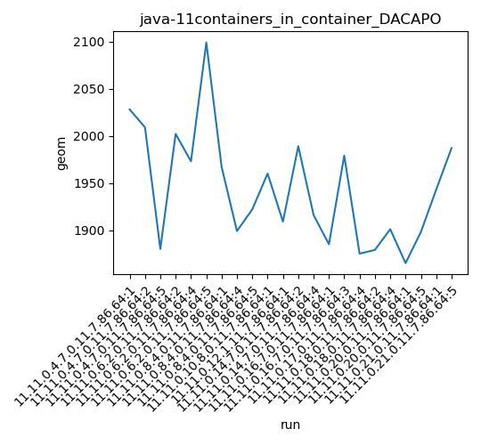

java-11 DACAPO
Context at bottom
/home/jvanek/git/benchmarks-in-nested-virtualisation-toolchain/final_results/containers_in_container_results/containers_in_container_DACAPO
java-11
DACAPO
containers_in_container_DACAPO
final score
Expected number of java-11 JDKs: 11
1st avgmed_alljdks_metric:
/home/jvanek/git/benchmarks-in-nested-virtualisation-toolchain/final_results/result_processing.py /home/jvanek/git/benchmarks-in-nested-virtualisation-toolchain/final_results/containers_in_container_results/containers_in_container_DACAPO geom False
values: [2028, 2009, 1880, 2002, 1973, 2099, 1967, 1899, 1922, 1960, 1909, 1989, 1916, 1885, 1979, 1875, 1879, 1901, 1865, 1898, 1943, 1987]

Expected number of iterations: 5
final number of values: 22 out of 55
Pass rate: 40.0%
values: (1865, 2099, 1943.8636363636363, 1943)

** accuracy from all jdks and runs
more is better
MIN: 1865
MAX: 2099
AVG: 1943.8636363636363
MED: 1943
Relative differences 1:
MIN-MAX: 11.0 %
MIN-AVG: 4.0 %
MIN-MED: 4.0 %
MAX-MIN: -13.0 %
MAX-AVG: -8.0 %
MAX-MED: -8.0 %
AVG-MED: -0.0 %
stored to java-11.properties. sort | uniq that!
2nd avgmed_by_jdk_metric:
values: [1972.3333333333333, 2024.6666666666667, 1929.3333333333333, 1960.0, 1909.0, 1952.5, 1932.0, 1875.0, 1890.0, 1881.5, 1965.0]

values: [2009, 2002, 1922, 1960, 1909, 1989, 1979, 1875, 1901, 1898, 1987]

values: (1875.0, 2024.6666666666667, 1935.5757575757575, 1932.0)
values: (1875, 2009, 1948.2727272727273, 1960)

** accuracy from all jdks where runs were avged
more is better
MIN: 1875.0
MAX: 2024.6666666666667
AVG: 1935.5757575757575
MED: 1932.0
Relative differences 1:
MIN-MAX: 7.0 %
MIN-AVG: 3.0 %
MIN-MED: 3.0 %
MAX-MIN: -8.0 %
MAX-AVG: -5.0 %
MAX-MED: -5.0 %
AVG-MED: -0.0 %
stored to java-11.properties. sort | uniq that!
** accuracy from all jdks where runs were medianed
more is better
MIN: 1875
MAX: 2009
AVG: 1948.2727272727273
MED: 1960
Relative differences 1:
MIN-MAX: 7.0 %
MIN-AVG: 4.0 %
MIN-MED: 4.0 %
MAX-MIN: -7.0 %
MAX-AVG: -3.0 %
MAX-MED: -2.0 %
AVG-MED: 1.0 %
stored to java-11.properties. sort | uniq that!
/home/jvanek/git/benchmarks-in-nested-virtualisation-toolchain/final_results/containers_in_container_results/containers_in_container_JMH
java-11
DACAPO
/home/jvanek/git/benchmarks-in-nested-virtualisation-toolchain/final_results/containers_in_container_results/containers_in_container_SPECJBB
java-11
DACAPO
/home/jvanek/git/benchmarks-in-nested-virtualisation-toolchain/final_results/containers_in_container_results/containers_in_container_RADARGUNs1
java-11
DACAPO
/home/jvanek/git/benchmarks-in-nested-virtualisation-toolchain/final_results/containers_in_container_results/containers_in_container_J2DBENCH
java-11
DACAPO
/home/jvanek/git/benchmarks-in-nested-virtualisation-toolchain/final_results/containers_in_container_results/containers_in_container_RADARGUNs3
java-11
DACAPO
pass rates:
containers_in_container_DACAPO=40.0%
Context:
- containers_in_container_results
- DACAPO